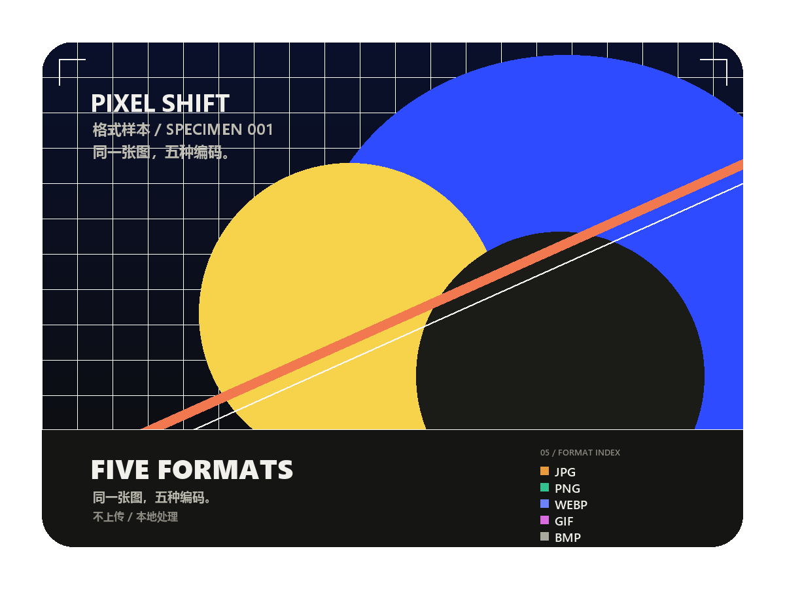
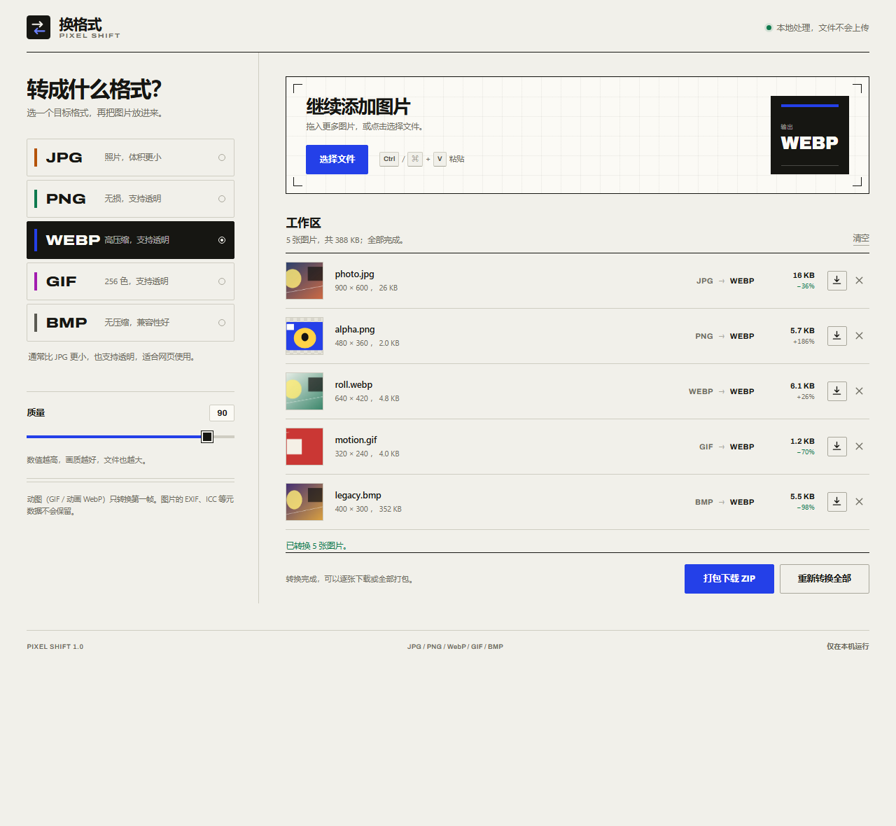

五种格式互转
JPG、PNG、WebP、GIF、BMP 双向转换。输入输出都支持这五种格式。
JPG、PNG、WebP、GIF、BMP 五种格式任意互转。拖进来，选好格式，下载。文件不上传，不加水印。

同一幅 1200 × 900 图形，五种真实编码。点击格式比较体积与透明表现。
目标格式、质量、透明填充和 GIF 抖动都在左侧。放进一批图片，转换完逐张下载，或者打包带走。

JPG、PNG、WebP、GIF、BMP 双向转换。输入输出都支持这五种格式。
PNG、WebP、GIF 保留透明；转成 JPG 或 BMP 时，用白、黑或自定义颜色填平。
一次添加多张图片，查看转换前后的体积，再一次打包下载。
JPG、WebP 质量可调；GIF 可开关抖动，在体积和渐变之间取舍。
每种格式都有取舍。下表按扩展的实际输出整理，帮助你在画质、体积和兼容性之间做选择。
| 格式 | 透明通道 | 压缩方式 | 适合 | 本工具输出 |
|---|---|---|---|---|
| JPG | 不支持，自动填平 | 有损，质量可调 | 照片、分享 | .jpg，质量 10–100 |
| PNG | 完整 Alpha | 无损 | 截图、图标、线条图 | .png，无需质量设置 |
| WEBP | 完整 Alpha | 有损，质量可调 | 网页、现代应用 | .webp，质量 10–100 |
| GIF | 二值透明 | 索引色，最多 256 色 | 简单图形、表情 | .gif，静态，可抖动 |
| BMP | 不支持，自动填平 | 无压缩 | 兼容旧软件 | .bmp，24 位，体积最大 |
体积不是唯一的判断标准：这张样本里 PNG 就比 JPG 更小。选择取决于图片内容是照片、线条图，还是需要兼容某个旧软件。
图片从磁盘读入内存，在画布上重新编码，然后直接交回浏览器下载。整个过程不需要网络，也不经过任何第三方。
扩展没有上架应用商店，需要以未打包扩展的方式安装。只需一次；之后从工具栏图标打开。
把 ZIP 解压到一个固定的文件夹。加载扩展后，这个文件夹需要保留。
Chrome 访问 chrome://extensions，Edge 访问 edge://extensions，打开开发者模式。
点击“加载已解压的扩展程序”，选择解压后的文件夹。点击工具栏上的图标开始转换。
浏览器会提示这是开发者模式扩展，这是正常现象。扩展本身不申请任何权限。
如果这里没有答案，可以在 GitHub 提 issue。
目前提供的是未签名的 ZIP，没有上架 Chrome 应用商店或 Edge 加载项商店。浏览器要求通过开发者模式加载这类扩展。加载时的提示是正常的；扩展本身不申请任何权限。
不会。扩展没有服务器，也没有网络请求。图片只在当前标签页的内存中解码和编码，下载通过浏览器本地的 Blob 完成。
GIF 和动画 WebP 只读取第一帧，输出始终是静态图片。GIF 输出使用 256 色调色板，透明是二值的。
取决于目标格式。PNG 无损；JPG 和 WebP 是有损压缩，可以调质量；GIF 最多 256 色；BMP 不压缩但会把透明区域填平。格式本身的取舍无法避免。
单张图片上限是 4800 万像素（例如 8000 × 6000）。超过这个尺寸会提示错误，避免浏览器内存耗尽。超大图片的 GIF 编码可能需要一点时间。
Chrome 和 Edge（Chromium 100 及以上）。其他 Chromium 浏览器理论上也能加载，但目前只在 Chrome / Edge 上做过完整测试。